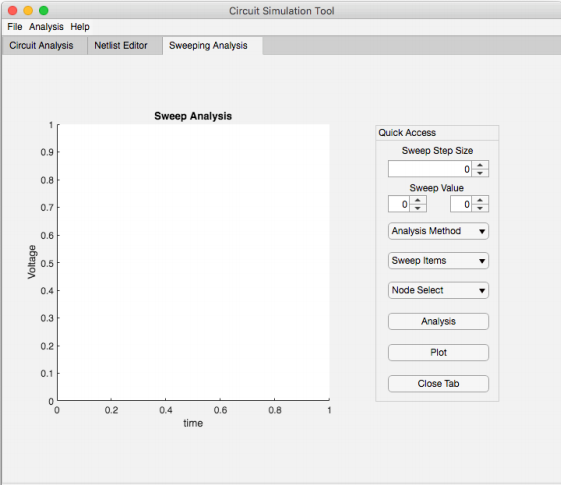
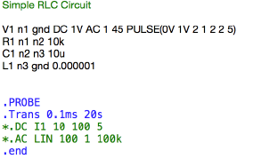
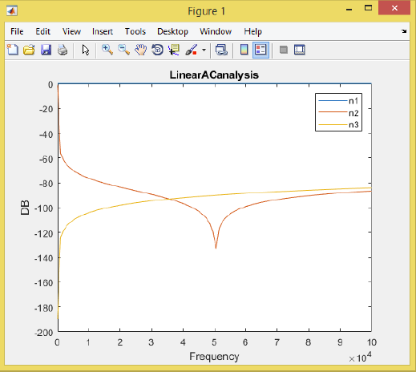
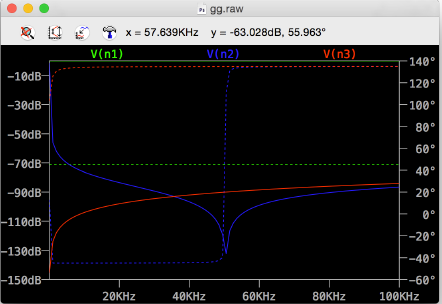
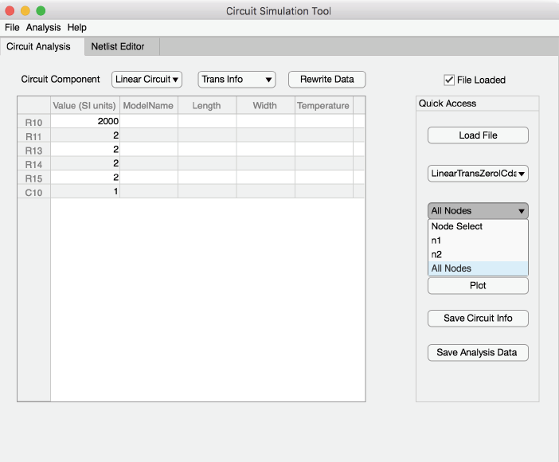
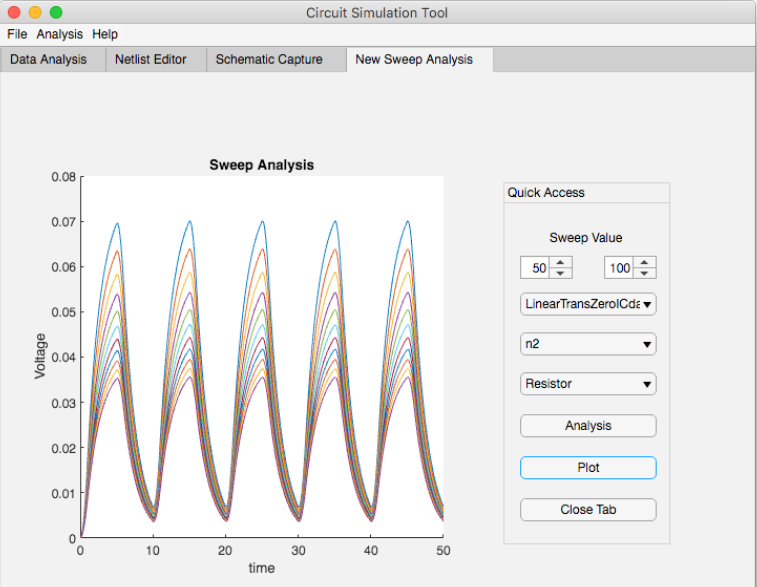

■ MATLAB Based Circuit Simulator

Motivated by the growing educational needs of an intuitive circuit simulation tool capable of
performing analysis on analog circuits, a MATLAB-based circuit simulation tool is targeted as
the goal of this design project. The project is divided into three different parts, enhancement and
testing of simulator core code (designed by Prof. Roni Khazaka), design and implementation of the simulator graphical user
interface (GUI), and implementation of the interaction between the core code and the GUI
AC, DC, and sweeping analysis on resistive, RC, RLC, and non-linear analog circuits is
developed and packaged using MATLAB code in MATLAB and App Designer environment.
■ An Example of Linear RLC AC Analysis

Result from our GUI

Result from our LTSpice

■ Different segment of our GUI

